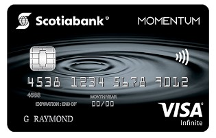
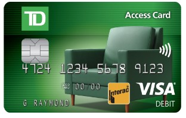

Online Payments
Internet-based electronic cash exchange is referred to as online payments. Typically, these payments involve the transfer of money from a buyer's bank account, debit card , or credit card to the seller's bank account in exchange for goods or services. The money can be obtained either directly from the customer's credit card, debit card or from an online payment platform that is connected to both the buyer's and the seller's bank accounts.Common Types of Online Payment
Credit/Debit Cards
Credit cards and Debit cards almost look identical, they both have a 16 digit card number, expiration dates, and CVV number. They both can be used to shop online and via POS machines.

But they have important differences, for instance with your credit card you are basically borrowing funds issued by a bank but with your debit card the money gets deducted from your bank account.
Security Tips:
If you have doubts about the legitimacy of a website but you have to make a purchase anyways it is better to use your credit card since most credit cards are covered by insurance companies.
It is safer to save most of your money in a savings account as it is required to insert the PIN to make a transaction with saving accounts.
Digital/Mobile Wallet
Both phrases relate to a kind of software that lets customers save credit and debit card information as well as loyalty card information in the cloud. Since it's cloud-based, all of the users' card information is kept in one location and is accessible from any connected device. So, what distinguishes a mobile wallet from a digital wallet? Simply , a mobile wallet is a subset of digital wallet technology. A mobile wallet can only be accessed through a smartphone app, in contrast to a digital wallet for example paypal, which can be used on any device.
Digital Wallets Can Be Used For:
- Transferring Money Between accounts
- Contactless Payments
- Making online payments
Mobile wallets aren't quite as broad, they are a kind of digital wallet that can be used to make contactless payments instead of using a credit or debit card. Apple pay and Samsung pay are two examples of mobile wallets. They can also store concert tickets, travel passes, boarding passes and copouns.
Bank Transfers
Bank transfer is basically to direct some funds from one bank account into another, this transfer can be processed either internationally or domestically while the basis remains the same.
Common Online Payment Frauds
Identity Theft
One of the most common tactics that fraudsters implement is Identity theft. This strategy is as old as commerce and has been one of fraudster’s favorites as this tactic has been used the most throughout the existence of the internet, but the way scammers get the victim's data has changed. Identity thieves constantly try to steal customer’s information by imitating a website, online shop or a bank login page, they try to capture information such as names, emails, phone numbers, payment information, zip code, address, etc.
Password Hacking
Over time, password and code hacking have advanced in sophistication. Scammers and phishers use a variety of tactics to capture their personal information and their passwords. Any website that uses an online platform to handle, distribute, or receive the currency is at risk due to this hazard. 69% of gen Z customers use mobile banking apps on a daily basis, therefore fraudsters like to target young, unaware users. However, that does not imply that everybody else is secure. Anyone who wants to prevent their account from being taken over must be cautious of password or code hacking.
Lost or Stolen Card If for any reason you lost your credit or debit card or it has been stolen by a pickpocket they have the ability to use that card until it is canceled or it has hit the credit limit. Nearly $50 million was lost from stolen cards in the span of one year from 2017 to 2018.
Payment Interception
Payment interception which is also known as man in the middle fraud is when malicious hackers take over a payment process like e-Interac. This kind of fraudulent activity is shifting away from credit cards and debit cards into digital wallets and social media based payments. Fraudsters are taking over transactions made via digital wallets or the internet in the middle of the sales process. Some imitate a company worker and direct customers to other fake websites or send them malicious links. For instance a fraudster might send a malicious link to an unsatisfied customer going to a fake and unauthorized payment page.
Protecting against Fraud
Identity Theft
E-commerce companies should inform their customers with information regarding any fake website that is attempting to impersonate their website. Also the customers should always check the websites before entering any sensitive data like bank details, address, or zip code that might lead to fraudulent attacks on their accounts.
Password Hacking
Always choose a safe password, this is one of the greatest e-commerce fraud prevention strategies to avoid password or code hacking. This tactic requires the user to use a lengthy string of characters, digits, and symbols in their password.Also using a safe password saving programme might improve the security of the user’s account.
Lost/Stolen Card
This type of fraud is the easiest to encounter to, if a user lost their card or got their card stolen they can easily contact their bank and inform them of the situation and cancel their credit or debit card also they can easily lock their card using the mobile bank application as today this feature is offered by most of the banking companies and instutitions.
Payment Interception
Payment interception can be very difficult to detect. Before making any payments, carefully review the payment page as this can help the user to prevent fraud in the area of online payments. Never use a payment method that disallows refunds or disputes. A trustworthy payment gateway will frequently permit money-backs to reassure customers that they are surfing on a trustworthy website.
Fraud Prevention Tips
1. Never share your Pin or CVV number with anyone, not even a family member or partner.
2. Do not use magnetic stripe reading machines as in canada all institutions must decline any magnetic stripe transaction.
3. Do not write down your pin.
4. Change your PIN often.
5. Limit the number of cards you carry.
6. Lock your mailbox to prevent malicious people from stealing your card statements
7. Cut the credit cards that are no longer valid
8. Use only trusted and secure websites look for security seals and check the URL
9. Avoid using public computers when logging into your bank account
10. Avoid giving any of your bank information over the phone
Set up a Mobile Wallet
Most smartphone users rely on two main mobile pay applications, Apple Pay and Samsung Pay, here we will go through a tutorial on how to set these applications up.
Apple Pay
1. Go to the wallet app, then tap the add button.
2. Tap Continue.
3. Follow the instructions in the app.
4. Verify your bank information with the card issuer. There might be a couple of more steps, you might need to provide some information or download a complimentary application.
Samsung Pay
1. Open Samsung Pay, It takes a few authorizations to use the app.Tap Continue when prompted
2. Tap get started.
3. You will be requested to enter the password to your Samsung Account to verify your identity for security purposes. then click OK.
4. You will be prompted to choose a lock mechanism to access the app in order to secure access to the app. PINs or fingerprint recognition are the two options. To finish the procedure, select the method that suits you the best and follow the instructions.
5. Finally you will be asked to add a payment card. You can do it immediately or later.
Online Payment Security Quiz
Now that you know everything there is to know about online payments, try this QUIZ to test yourself and your new knowledge!